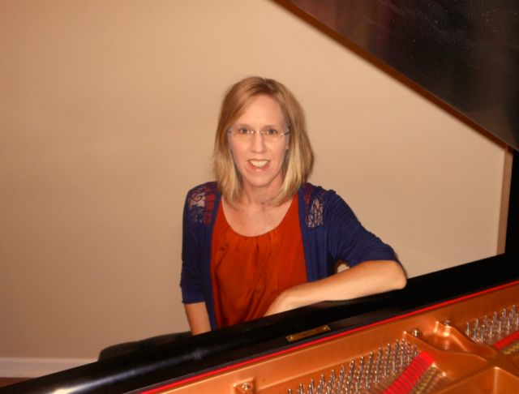

About the teacher:
Monica Sanders has been playing the piano since the age of 5 when she began
her studies with Deborah Mele in Santa Barbara, California. Her love of
music guided
her through to graduate school at Portland
State University where she received
her Master of Arts in Music in 2004. She was also the recipient
of the Beaux Arts Society Scholarship in 2004.
Monica has been teaching and performing in Oregon for the past 8 years. She
currently teaches private piano lessons for Portland
Community College and Portland
Bible College and is a certified Andover
Educator.
Monica has studied with Christine Mirabella, Claire Wachter, Lisa Marsh, Carol
Rich, Toby Koenigsberg, Randy Porter, Darrell Grant, and Barbara Conable, all of whom have
greatly inspired and informed her performing and teaching.
Monica holds a BA in Romance Languages. She speaks Italian, Spanish and German,
and has traveled and worked abroad extensively in Europe and Latin America.
The focus of Monica’s teaching is to help foster and guide each student’s
creative, musical spirit.